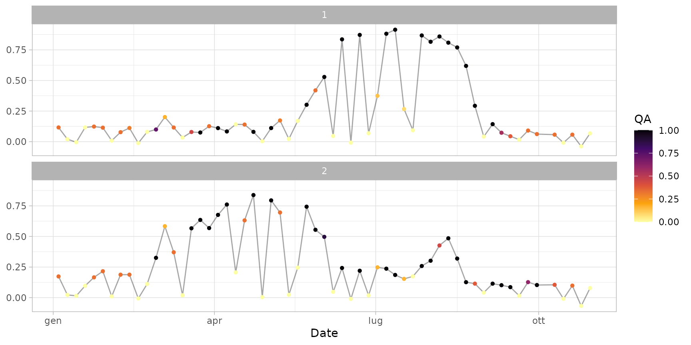

Sample time series extracted from the example image archive
provided with the package (see sample_paths())
over the extension of sampleroi polygons.
It was created following the example provided in the extract_s2ts()
documentation.
It is used in the documentation of function smooth_s2ts().
data(ts_raw)A s2ts object with 60 dates (in the period 2020-01-01 to
2020-09-30) and 2 IDs (corresponding to sampleroi polygons).
data(ts_raw)
print(ts_raw, topn = 5) # standard print
#> A raw s2ts time series with 60 dates and 2 IDs.
#> Date Orbit Sensor 1 2
#> 1: 2020-01-04 022 2B 0.116133333 ○ 0.173306250 ○
#> 2: 2020-01-09 022 2A 0.020170833 ○ 0.022352083 ○
#> 3: 2020-01-14 022 2B -0.004372917 ○ 0.015077083 ○
#> 4: 2020-01-19 022 2A 0.116368750 ○ 0.096704167 ○
#> 5: 2020-01-24 022 2B 0.123387500 ○ 0.165727083 ○
#> ---
#> 56: 2020-10-10 022 2B 0.057233333 ○ 0.104959233 ○
#> 57: 2020-10-15 022 2A -0.008637500 ○ -0.009322917 ○
#> 58: 2020-10-20 022 2B 0.057181250 ○ 0.098320833 ○
#> 59: 2020-10-25 022 2A -0.038556250 ○ -0.067797917 ○
#> 60: 2020-10-30 022 2B 0.067635417 ○ 0.078327083 ○
#>
#> Quality flags: ● [1] ◕ [0.9,1) ◑ [0.75,0.9) ◔ [0.5,0.75) ○ [0,0.5)
head(as.data.frame(ts_raw)) # see content
#> id date orbit sensor value qa
#> 1 1 2020-01-04 022 2B 0.116133333 0.33
#> 2 1 2020-01-09 022 2A 0.020170833 0.00
#> 3 1 2020-01-14 022 2B -0.004372917 0.00
#> 4 1 2020-01-19 022 2A 0.116368750 0.00
#> 5 1 2020-01-24 022 2B 0.123387500 0.33
#> 6 1 2020-01-29 022 2A 0.114379167 0.33
plot(ts_raw)
